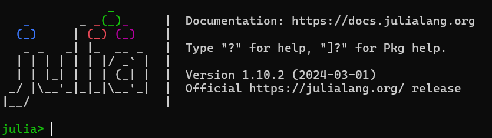
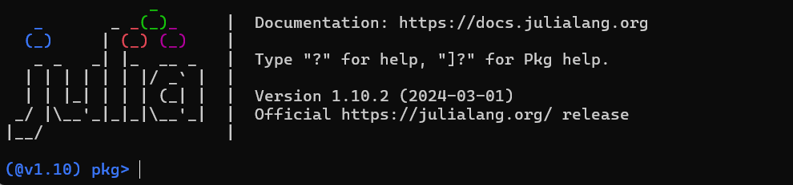
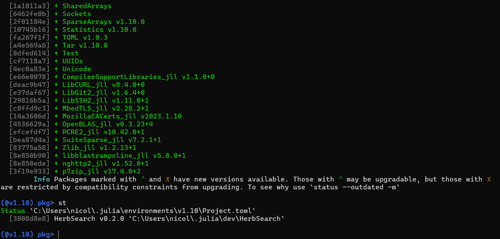
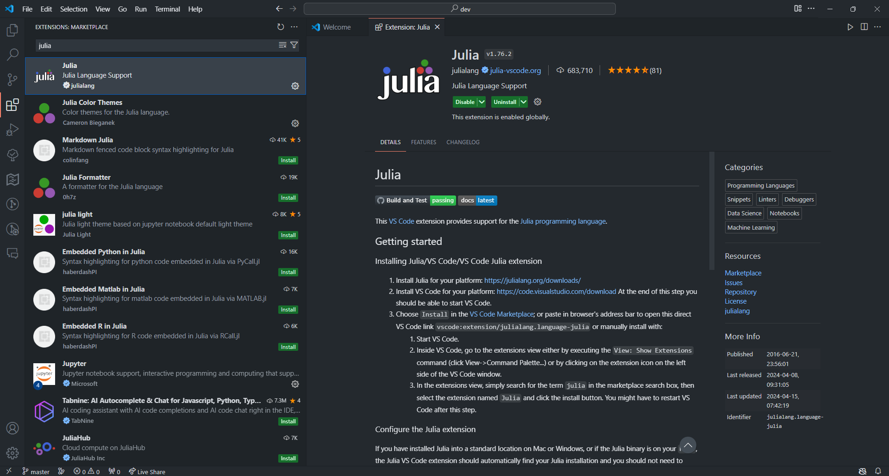
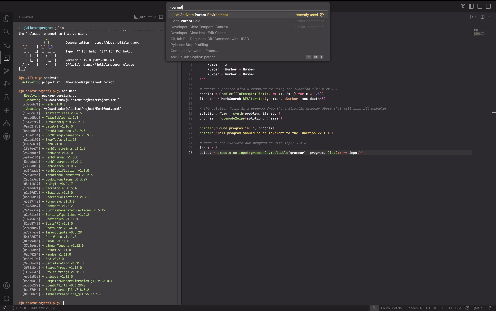

Installation Guide
Before installing Herb.jl, ensure that you have a running Julia distribution installed (Julia version 1.7 and above were tested). To install Julia, getting to know it, and seting up an IDE, see the sections bellow.
Thanks to Julia's package management, installing Herb.jl is very straightforward. Activate the default Julia REPL using
juliaor from within one of your projects using
julia --project=.From the Julia REPL you can now add the package:
] add Herbor
import Pkg
Pkg.add("Herb")This will install all dependencies automatically.
The package Herb includes the subpackages HerbCore, HerbGrammar, HerbConstraints,HerbSearch, andHerbSpecificationas dependencies, and re-exports all of their exported types and functions. IncludingHerb` should give you a "batteries-included" experience with everything you need to get started.
] add HerbConstraints HerbCore HerbSpecification HerbInterpret HerbGrammar HerbSearchAnd just like this you are done! Welcome to Herb.jl!
1. Install Julia
First, we need to install Julia before we proceed. Head over the Julia downloads page and follow the instructions.
Linux & MacOS
Have a look at the installation page for your distribution or simply paste this into a terminal.
curl -fsSL https://install.julialang.org | shWindows
Put this command in Powershell.
winget install julia -s msstoreIf winget is not installed install it by checking this link (https://phoenixnap.com/kb/install-winget)
Check Julia installation
Open a command prompt/terminal and run julia.
You should see something similar to this:

You will see the start-up message above, including the version number. At the time of writing, this is 1.10.2. You will likely see the latest stable release, listed on the Julia organization's website.
2. Julia REPL
What you see right now on the screen is called the Julia REPL (Read–Eval–Print Loop). This is similar to ghci from Haskell and similar to node's REPL too.
Let's try some simple things. Only type the part after julia> without the comment (the part after #)
julia> x = 2 # creates a variable called x with value 2
2 # prints the results
julia> print("hello","julia")
hellojulia
julia> for x in 1:10 # for loop in julia
println(x)
end # notice how we have to specify end here..
1
2
3
4
5
6
7
8
9
10
To exit the REPL use Ctrl+D or simply type exit().
Within the REPL, you can enter special modes:
Help mode:
Typing ? opens a help menu for what the REPL can do. You can type here Julia commands, and get information abut them.
help?>
search: ] [ = $ ; ( @ { " ) ? . } ⊽ ⊼ ⊻ ⊋ ⊊ ⊉ ⊈ ⊇ ⊆ ≥ ≤ ≢ ≡ ≠ ≉ ≈ ∪ ∩ ∜ ∛ √ ∘ ∌ ∋ ∉ ∈ ℯ π ÷ ~ | ^ \ > < : / - + * ' & % ! && if :: as
Welcome to Julia 1.10.2. The full manual is available at
https://docs.julialang.org
as well as many great tutorials and learning resources:
https://julialang.org/learning/
For help on a specific function or macro, type `?` followed by its name, e.g. ?cos, or ?@time, and press enter. Type ; to enter shell
mode, ] to enter package mode.
To exit the interactive session, type CTRL-D (press the control key together with the d key), or type exit(). <- Useful in case you forget how to exit :)Package mode
Typing ] allows you to intearch with the package inviorments. You can see which environment is active, activate an evnviorment, see its status (st), add and remove(rm) packages and more.
(<environment_name>) pkg> ?
Welcome to the Pkg REPL-mode. To return to the julia>
prompt, either press backspace when the input line is
empty or press Ctrl+C.
Full documentation available at
https://pkgdocs.julialang.org/
Synopsis
pkg> cmd [opts] [args]
Multiple commands can be given on the same line by
interleaving a ; between the commands. Some commands
have an alias, indicated below.
Commands
activate: set the primary environment the package
manager manipulates
add: add packages to project
build: run the build script for packages
<and much more>
Shell mode
By typing ; you can enter shell mode, allowing you to run shell comands without exiting the REPL.
3. Add and Develop Packages
Usually, in Julia one would create a script file (something like file.jl) and write his code there. However, Herb consists of packages that other people can use. Think about pip packages or npm packages.
Thus, the setup will be a bit different from what you see in other programming languages.
- First navigate to the home folder of your operating system. On Linux, this is just
cd ~. On Windows opencmdand typecd %userprofile%(This will navigate toC:/Users/your_username). Alternatively, if usingPowerShellsimply typecd ~. - type
cd .juliato navigate the folder where Julia keeps the installation things - type
juliato enter the JULIA REPL. From here we will be able to also install the repositories - type
]to enter the "Package Mode" of Julia. From here, we can install packages and tasks related to dependency management. After typing]theREPLshould now look like this

Notice that the ${\color{blue}blue}$ color on the left. This indicates that we are in the "Package Mode" shell where we do not write code but run commands to manage dependencies or install packages.
- To see what can we do from here,
?is again helpful. Try to read through the output just to get an idea of what options are available. - Type
dev HerbSearchSince we want to clone a package for local development we will use thedevordevelopcommand. This will clone the package from Github and store the repository in the~/.julia/devfolder. - After a lot of packages are installed, you can run
st(short for status) to see thatHerbSearchwas successfully installed.
The output should look similar to this:

- Exit the terminal (Ctrl+D) and check that a new folder
devappeared usingls(Linux) ordir(Windows) - Navigate to that folder
cd dev. This is the folder where theHerbSearchpackage was cloned and where we are going to develop our code. If we need to modify the code from other published packages such asHerbGrammarwe would have todevthe package locally to change it (e.g.dev HerbGrammar)
4. Setup IDE (VSCode)
Hopefully, everything has gone smoothly so far 😅. Let's set up our IDE to start coding.
Unfortunately, there is no nice JetBrains IDE for Julia like IntelliJ, PyCharm, etc. There is a VSCode extension that is actively developed that works quite well. However, it is sometimes unstable and might crash from time to time (especially if you are on Windows). This is the extension that we will use.
If you do not want to use VSCode and want to use vim 😉 check this link.
1. Open VsCode
Assuming vs-code is installed on the system and that you have your terminal still open in the ~/.julia/dev folder you can simply type
$ code . To open the folder in VSCode.
2. Install Julia extension
Open the extension tab either by clicking or by using the keyboard shortcut (Ctrl+Shift+X) and search for julia and install the first extension.

3. Create a project and run an example
Let's start by creating a folder for our project. We can call it juliaTestProject. In the project folder, create a new file in the folder src and give it a name (e.g., my_first_script.jl) with .jl as the suffix.
Below is a simple script using Herb; you can paste it into your file.
using Herb
# define our elementary context-free grammar
# Can add and multiply an input variable x or the integers 1,2.
grammar = @cfgrammar begin
Number = |(1:2)
Number = x
Number = Number + Number
Number = Number * Number
end
# create a problem with 5 examples by using the function f(x) = 2x + 1
problem = Problem([IOExample(Dict(:x => x), 2x+1) for x ∈ 1:5])
iterator = BFSIterator(g, :Number, max_depth=5)
# The solution found is a program from the arithmetic grammar above that will pass all examples
solution, flag = synth(problem, iterator)
program = rulenode2expr(solution, grammar)
println("Found program is: ", program)
println("This program should be equiavalent to the function 2x + 1")
# Here we can evaluate our program with input x = 6
input = 6
output = execute_on_input(grammar2symboltable(grammar), program, Dict(:x => input))
println("Output for input ", input, " is: ", output)To run, either click on the Run button in the top right side of the screen and choose Julia: Execute Active file in REPL or press ALT+Enter (option+Enter on Mac). This will create a window that spawns the Julia REPL and evaluates the code in the file. To run part of a file, you can use shift+Enter, which runs the selected code (the current line if no code is selected) in the REPL (open one if needed).
If you did not add Herb to the global Julia environment, this will not work, because by default VSCode uses it (similar to Python virtualenv). To create your own environment in your new project, run in a Julia REPL:
]
activate .
add HerbThis first line will put you in pkg mode. You can see here which environment is active. The second line will create a new environment for your project (if it does not exist), and activate it. The second line adds Herb to this new environment. You will see that a Project.toml file was added to your project folder, and in it, Herb is specified as a dependency for this project.
Now, we want VSCode to switch to the environment of our project. Open the command palette by typing Ctrl+Shift+P and search for Julia: >Activate Parent Environment. This is how it should look:

The small Julia env: ... on the bottom should now say your project name. You can also click on it to change it.
Try rerunning the code, and it should work now.